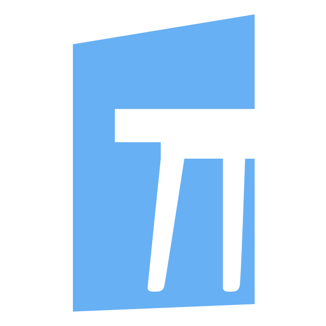

Le sottoscrizioni dopo i 6 mesi si applicano in base alle esigenze del negozio:
Good 119-25
Better 189-30
Best 289-55
Costruzione e collaudo del sito per il cliente:
Formazione degli operatori per eseguire in modo autonomo i principali workflow:
Dopo 5 ore dovranno essere ingrado di1:
Inserire 10 clienti del clienti (clc) con almeno un preventivo attivo. Inserirli manualmente dalla loro gestione precedente che potrebbe essere da EASY STORE o da cartaceo o da precedente gestionale.
Se tra i 10 clc non si riesce ad arrivare ad un preventivo stampato, farsi lasciare tutte le informazioni relative del clc, fornitore, listini del fornitore e preventivo2.
Operatore di casapercasa: Mirko
Operatore di appdelmobile: Agustin
pausa di 10 minuti

APPDELMOBILE